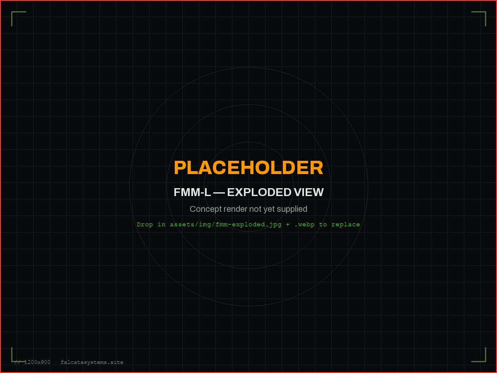
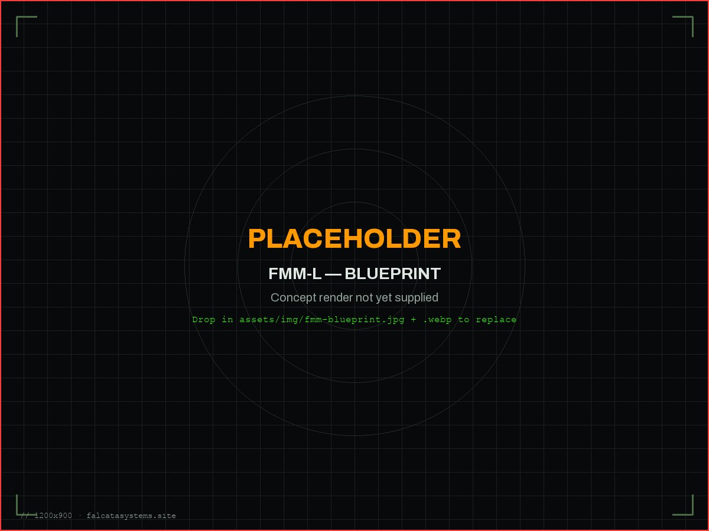
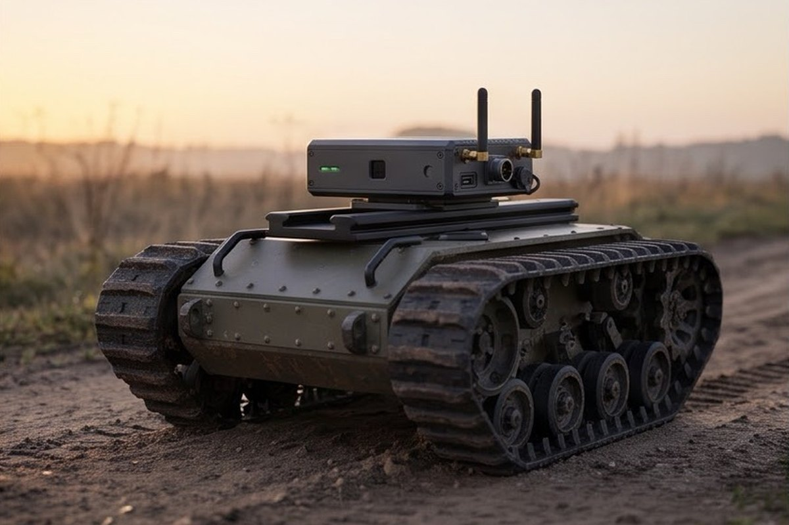

Uma ligação de comando resiliente e um monitor de integridade GNSS para qualquer plataforma ArduPilot ou PX4.
O FMM-L v1 faz exatamente quatro coisas. Não é feita qualquer afirmação além destas, e nada mais está ainda integrado.
| Capacidade | O Que Faz |
|---|---|
| Ligação C2 Cifrada | Comando e telemetria circulam por um canal cifrado com AES-128 entre o operador e o veículo. |
| Relay / Malha | Os módulos FMM-L reencaminham o tráfego uns dos outros, alargando o alcance da ligação sem infraestrutura adicional em terra. |
| Agnóstico de Veículo | Funciona com qualquer piloto automático ArduPilot ou PX4 através de MAVLink — sem trabalho de integração por parte do cliente. |
| Monitorização de Integridade GNSS | Deteta jamming e spoofing de GPS e alerta o operador em tempo real. |



O FMM-L é um canal de comando e controlo resiliente mais um monitor de integridade GNSS — não uma ligação de vídeo. Não transporta vídeo e não reivindica alta largura de banda. Complementa qualquer ligação de vídeo ou de sensores que o veículo já tenha. Não lhe chamamos "impossível de bloquear"; o que construímos é uma ligação concebida para continuar a funcionar sob jamming, e um monitor que avisa o operador quando a fixação de GPS não é de confiança.
Concebido e montado em Portugal, com componentes provenientes da UE e de estados-membros da NATO.
Preço ajustado para caber em veículos baratos e sacrificáveis — não só nos que conseguem absorver uma carga útil dispendiosa.
Fala MAVLink nativamente com ArduPilot e PX4, sem necessidade de construir ou manter uma camada de integração personalizada.
A deteção de spoofing e jamming não é um extra — vem incluída no FMM-L v1, com alertas diretos para o operador.
Construído para defesa e para proteção civil — combate a incêndios florestais, busca e salvamento — não um produto de mercado único.
Discussão do veículo, da missão e do ambiente operacional.
Confirmação da compatibilidade ArduPilot/PX4 e da montagem na plataforma-alvo.
Validação da ligação, do relay e do comportamento de integridade GNSS antes da implementação.
Implementação no veículo do cliente e suporte técnico contínuo.
Diga-nos o que é e o que precisa para sobreviver, e diremos o que é possível alcançar.